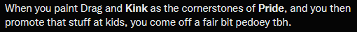
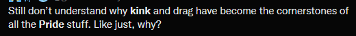
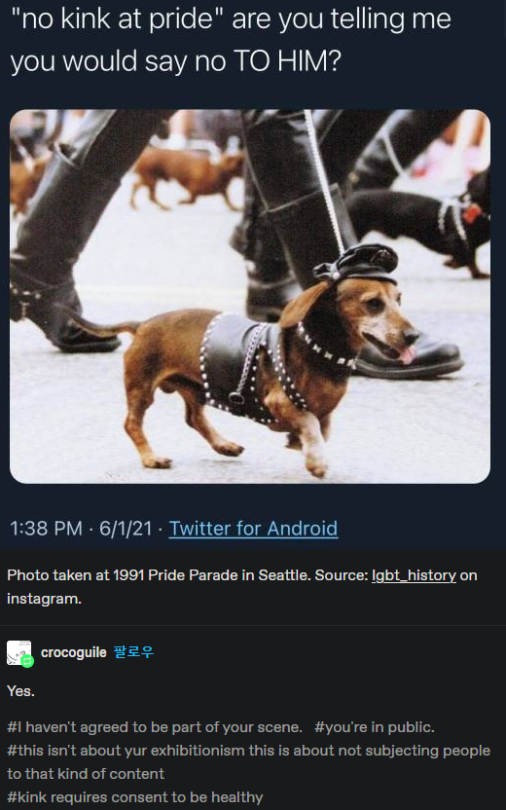
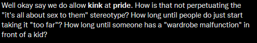
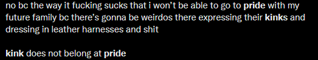

TWs for: Mentions of pedophilia and beastiality. Extended discussion of homophobia.
It's June! That means that it's Pride Month(tm) and that means that we're back at the time of the year where we have what many refer to as the Kink At Pride discourse. If you're lucky enough to be someone who is Offline, or at least Offline enough to miss this discourse, here's the gist: At some pride events, people will wear clothing/accessories that indicate an involvement in BDSM.
Every year for the past while, the internet explodes into slapfights about if this is okay.
To start this article, let me first set the stage with some screenshots from the people who are anti-kink at pride.
    For reference, more than a few if not the majority of the images I just showed you come from LGBT+ people. I avoided posts that are from @trumpfan6969 because, frankly, we know why they're getting all up in arms about sexual degeneracy. But, why are other LGBT+ people parroting this? Why is this a yearly discourse? I hope to address some common arguments from anti-kink at pride people, discuss the greater picture of these arguments, and why that people should be careful of the arguments they're making.
NOTE: I'm a gay man and will be speaking about the homophobia inherent in these arguments since I feel most comfortable talking about that. Lesbians also have a very healthy leather community which, while not targeted as much in these particular arguments, still deserves to be rsepected.
Argument 1: Dressing in a way that is sexually provocative is evil and pedophilic and degenerate etc etc etc
You're so right. I wish people would stop wearing dresses that they feel fit them well, shoes that they think make their legs look good, pants that accentuate their ass, and -
Oh, sorry, you only have this energy for when it's LGBT+ people, particularly gay men?
This argument has always been one of the most baffling to me. People dress in ways that are meant to be sexually attractive all the time. Are you going to go up to someone wearing a crop top and accuse them of having a stomach fetish?
You may disagree with this point with: "Well, it's different if it's kink shit! Kids might see that!"
What defines kink shit to you? People can wear harnesses and collars without necessarily being kinksters. Might just be goth, honestly. Kink is what you make of it. Some people have armpit fetishes and like to wear tank tops because of that. There's no way just looking at someone to decide that their clothing is meant for Kinky Purposes(tm). It's like when people get mad at people in fursuits at events, saying that it's Degenerate Furry Shit. Might be a fetish for them, might not. How do you know?
And if you don't know, what effect does that have on people? If someone doesn't know that a collar is a kink thing, are they being sexually harrassed by seeing someone wearing a collar?
Argument 2: Why do we need to celebrate sexual acts in the first place?
Here's a simple answer: It took until 2003 for the US Supreme Court to say that Sodomy Laws were unconstitutional.
Sodomy laws, for those who don't know, refer to laws that made anal and oral sex illegal in certain circumstances.
Every state law made sodomy between homosexual couples illegal. Other state laws also made sodomy illegal between heterosexual couples, if they were not married. The strictest laws made sodomy illegal in every case, even between married couples.
That quote is from The Simple Wikipedia article about Sodomy Laws in the US.
Sodomy laws existed largely for the sole purpose of criminalizing sex between gay men. Sodomy laws would put crimes like beastiality on the same level as consensual anal or oral sex between two men.
Homophobia has not just been about a fear of gay men holding hands or getting married. Homophobia fears and criminalizes gay sex acts. Gay men risked felony charges to have sex with other men. Gay men would have to cruise(?) for sex as clubs and bars could be dangerous, revealing. It was safer to have anonymous, casual sex in semi-public or public locations such as parks or gyms and even this carried heavy risks.
This is why we celebrate the ability for gay men to be out and proud not just about their romantic lives, but about their sex lives. Because gay sex has historically been criminalized and seen as immoral and evil, regardless of context. Because it is still dangerous for a man to find another man to have sex with, even in areas that are otherwise seen as liberal and LGBT+ friendly. It is an affirmation that gay sex is not something that should be hidden or ashamed of. America is a country where you can see a commercial where a woman in a bikini eats a burger seductively more easily than you can see positive depictions of gay sex in media.
That is why gay men should be allowed to be proud of their sex lives.
Argument 3: Does it need to be kink, though?
Yes.
Kink has played an important part in LGBT+ history. Most gay bars were often either indirectly or directly kink spaces as well. Many gay men explored their sexuality for the first time in these spaces. Without these bars and clubs, many gay men would not have had a space for safe (as safe as it could be, at least) sexual exploration and meeting other gay men.
Leather bars/clubs were often the center of historically gay neighborhoods. BDSM/Leather/Kink and LGBT history are inseperable. To say otherwise is ahistorical.
Argument 4: Well I don't have sex/don't like sex/am sex repulsed and it makes me uncomfortable-
Then don't look. Sucks, I know, but you cannot tell people to not express an important part of their identity just because it makes you uncomfortable.
Argument 5: Okay, but what about pup masks, aren't those kinda gross and weird?
No. Seethe, cope, etc. Everything I said also applies to pup players.
Argument 6: What about children at pride?
As previously stated, your child is probably not going to make the connection that the dude in a muir cap and a leather jacket is a kinkster. If you tell them that it's a sex thing, that's on you. Gay men existing around your children is not pedophilia.
Also, pride was a protest, not every space has to be child friendly, and most BDSM stuff at pride is in age gated areas. This image you have of a bunch of dudes sucking and fucking in the middle of the street is fictional.
Argument 7: Okay, but I think kink/BDSM is inherently immoral
Don't care, didn't ask, plus your views on sex and sexuality are concerning and I think you should analyze why you are so disgusted at what consenting adults get up to with their own bodies.
Argument 8: I thought this was supposed to be a serious article!
It is, in the sense that I mean everything that I say. It isn't in the sense that I try not to get too angry about this topic anymore because I've been experiencing this discourse for literal years and it exhausts me.
In Conclusion
Anti-kink at pride people are just parroting homophobic arguments: That gay men are sexual deviants, that their sexuality is somehow inherently evil or corrupting, that gay men are pedophiles, etc. Kink has always played an important part of LGBT+ history, pride does not have any obligation to be 100% child friendly, and people are not engaging in BDSM scenes around you just because they're wearing leather jackets.
If you sound indistinguishable from a Christian Conservative complaining about gay people on TV, you should probably consider that your arguments suck ass.